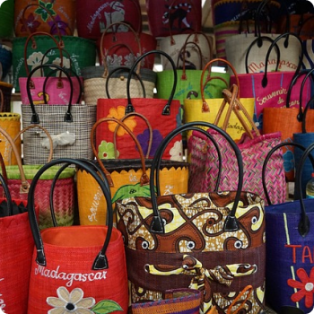

Présentation

Tous les sacs et paniers sont faits par des artisants malgaches de la ville d’antananarive, district de Antanimenakely Ankadimanga.
Ils sont confectionnés à la main avec des matières premières (raphia, tissu, cuir de peau de zébu) venant principalement de l’île rouge.

Toutes les finitions sont faites de manière soignée et professionnelle.
Tous les coloris et toutes les matières s’allient en un savant mélange pour faire valoir votre beauté et votre bonne humeur.